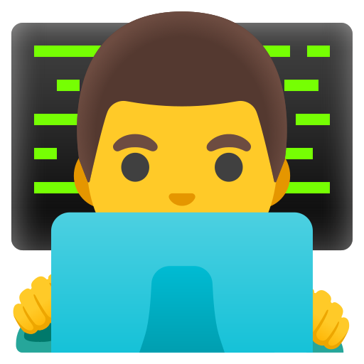

<div class="mx-4 xl:mx-32 my-24">
  <div class="grid grid-cols-1 md:grid-cols-2 gap-8">
    <div class="relative">
      
      <div
        class="invisible md:visible absolute h-[250px] w-[250px] bg-white bottom-0 right-0 rounded-full"
      >
        
        
      </div>
    </div>
    <div class="text-center md:text-left">
      <h2 class="uppercase text-[#75AADB] text-xl font-bold">Sobre Mi</h2>
      <h3 class="text-3xl font-bold my-6">
        Un dedicado Front-End Developer en Buenos Aires, Argentina
        <ng-icon
          class="text-[#75AADB] align-[-5px]"
          name="matLocationOn"
        ></ng-icon>
      </h3>
      <p>
        Como Desarrollador Front-End, poseo un impresionante arsenal de
        habilidades en HTML, CSS, JavaScript, React, Tailwind y Angular.
        Sobresalgo en el diseño y mantenimiento de sitios web sensibles que
        ofrecen una experiencia de usuario sin problemas. Mi experiencia radica
        en la elaboración de interfaces dinámicas y atractivas a través de la
        escritura de código limpio y optimizado y la utilización de herramientas
        y técnicas de desarrollo de vanguardia. También soy un jugador de equipo
        que prospera en la colaboración con equipos multi-funcionales para
        producir aplicaciones web excepcionales.
      </p>
    </div>
  </div>
</div>
